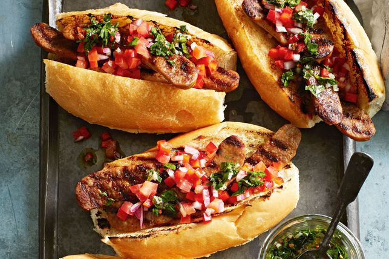

Choripan

The Choripan is a type of sandwich from Argentina.
The name comes from the combination of the names of its ingredients:
a grilled chorizo sausage and a crusty bread (pan in Spanish).
Ingredients
- 2 ripe tomatoes
- 1/2 red capsicum, deseeded, finely chopped
- 1/2 red onion, finely chopped
- 2 tbsp extra virgin olive oil
- 1 tbsp red wine vinegar
- 6 Beak & Sons Smoky Chorizo CLassic Pork & Beef Sausages
- 4 long crusty rolls or baguettes
Steps
- Cut the tomatoes into quarters.
Remove the seeds and discard. Finely chop the flesh and place in a large bowl
- Add the capsicum, onion, oil and vinegar to the bowl and season well.
Stir to combine and set aside to develop the flavours.
- Preheat a chargrill pan or barbecue grill plate on medium heat.
Cook chorizo, turning often, for 10 minuts or until charred and just cooked through.
- Transfer chorizo to a chopping board and cut in half lengthways.
Cook, cut side down, for 2-3 minutes or until slightly charred.
Transfer to a plate. Cover with foil.
- Cut rolls lengthways, until almost cut through.
Open and grill, cut side down, for 2 minutes.
Divide chorizo among rolls, top with chimichurri and tomato mixture.